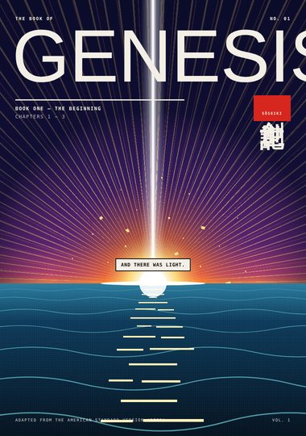
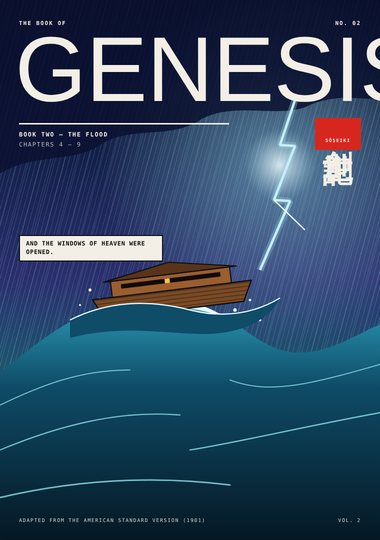
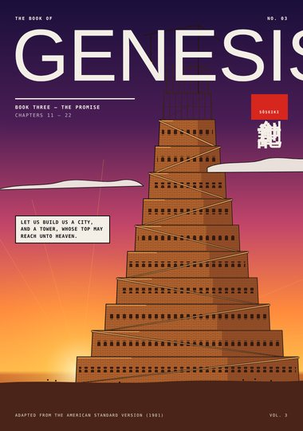

Bible Manga · 創世記
Genesis
The first book of the Bible as a full-color manga — from the first light to Jacob's ladder and the brothers' reunion. Adapted from the American Standard Version (1901).
Start at the beginning ›Books

Book One · Genesis 1–3The BeginningCreation in seven days, the garden of Eden, the serpent, and the way east of Eden.7 pages
Book Two · Genesis 4–9The FloodCain and Abel, the generations of Adam, the ark, the deluge, and the bow in the cloud.8 pages
Book Three · Genesis 11–22The PromiseThe tower of Babel, the call of Abram, Sodom and Gomorrah, and the mountain of Moriah.8 pages Book Four · Genesis 25–33The LadderJacob and Esau, the stolen blessing, the ladder at Bethel, and the night of wrestling at Peniel.8 pages
Book Four · Genesis 25–33The LadderJacob and Esau, the stolen blessing, the ladder at Bethel, and the night of wrestling at Peniel.8 pages
All pages
Book One: The Beginning
- Cover Cover Genesis 1–3
- Page 1 Let There Be Light Genesis 1:1–3
- Page 2 Day and Firmament Genesis 1:4–8
- Page 3 Land, Seed, Lights Genesis 1:9–19
- Page 4 Living Things and Man Genesis 1:20 – 2:7
- Page 5 Rest and Eden Genesis 2:2–17
- Page 6 The Woman and the Serpent Genesis 2:21 – 3:5
- Page 7 The Fall Genesis 3:6–24
Book Two: The Flood
- Cover Cover Genesis 4–9
- Page 1 The Offerings Genesis 4:2–7
- Page 2 In the Field Genesis 4:8–11
- Page 3 The Mark of Cain Genesis 4:12–17
- Page 4 The Generations Genesis 5 – 6:8
- Page 5 The Ark Genesis 6:14 – 7:16
- Page 6 The Deluge Genesis 7:11–23
- Page 7 The Raven and the Dove Genesis 8
- Page 8 The Covenant Genesis 8:20 – 9:17
Book Three: The Promise
- Cover Cover Genesis 11–22
- Page 1 Brick for Stone Genesis 11:1–4
- Page 2 Babel Genesis 11:5–9
- Page 3 The Call of Abram Genesis 12:1–7
- Page 4 Number the Stars Genesis 15:5–6
- Page 5 Sarah Laughed Genesis 18 – 21
- Page 6 Fire from Heaven Genesis 19:24–28
- Page 7 The Way to Moriah Genesis 22:1–8
- Page 8 Jehovah-jireh Genesis 22:9–18
Book Four: The Ladder
- Cover Cover Genesis 25–33
- Page 1 The Twins Genesis 25:24–27
- Page 2 The Red Pottage Genesis 25:29–34
- Page 3 The Stolen Blessing Genesis 27:1–29
- Page 4 A Bitter Cry Genesis 27:34–43
- Page 5 The Ladder at Bethel Genesis 28:10–19
- Page 6 Rachel Genesis 29:9–20
- Page 7 Wrestling at Peniel Genesis 32:24–31
- Page 8 The Brothers Meet Genesis 33:1–4